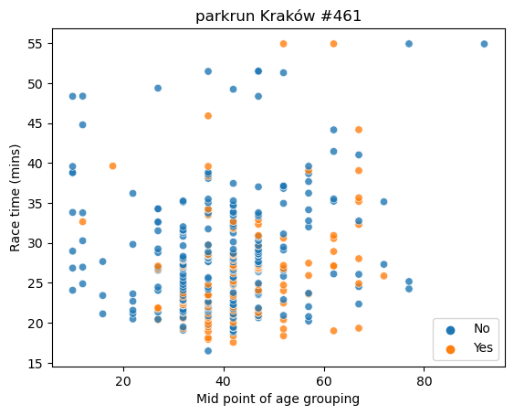
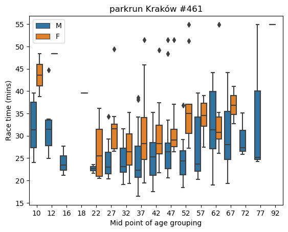
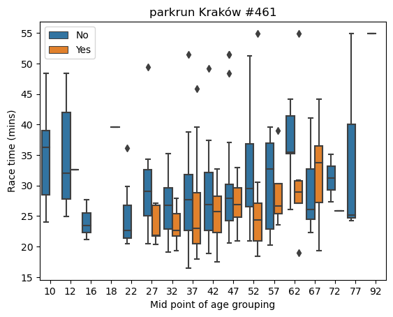
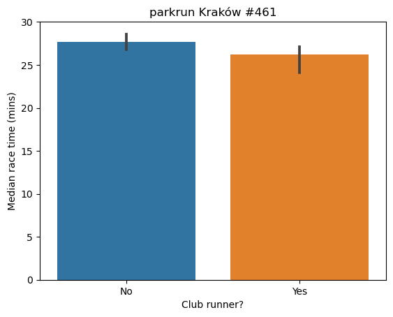
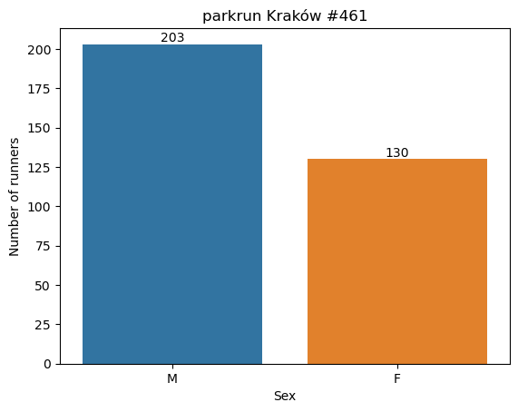

import pandas as pd
import matplotlib.pyplot as plt
import seaborn as sns
import numpy as npparkrun Kraków 5k 20/05/2023 | #461
Overview | Motivation
A couple of weeks ago I signed up for parkrun Kraków. I had a dry run on 6 May, just to see how it all worked. There was a bit of a mix up with the scanning and my ‘official’ time was a bit artificial, but on Saturday I took part in my first proper parkrun.
It turns out it was the 10 year anniversary of the event in Kraków, and there was a great atmosphere, and quite a few more runners than on my dry run!

After the race I thought it would be fun to do a bit of a data dive on this race. My aim was to gain an insight into the distribution of competitors across age and sex, and I was particularly interested in discovering whether being affiliated with a running club results in a faster race time (as you might expect) compared to unattached runners like me.
Data source
The results are published each week on the official website. I could not find an API and so I just copied and pasted form the table into a csv file for cleansing using pandas, and visualisation using Seaborn.
It turns out that there was a lot more cleaning required than I first thought! Often the case with smaller datasets.
Import the required packages
Load in the data and retrive my race time
parkrun_krakow_20_05_23 = pd.read_csv('krakow_20_05_23.csv', encoding='latin')my_row = parkrun_krakow_20_05_23.loc[parkrun_krakow_20_05_23['UCZESTNIK'] == "Stephen BARRIE"]
my_race_time = my_row['CZAS']
my_race_time 130 24:57:00
Name: CZAS, dtype: objectOverall, I was quite pleased with my time. I had a target of 25 minutes in mind which I beat - by 3 seconds!
Exploratory Data Analysis | Cleansing
# Drop name column for anonymity
parkrun_krakow_20_05_23 = parkrun_krakow_20_05_23.drop('UCZESTNIK', axis=1)
# preview our data
parkrun_krakow_20_05_23| POZYCJA | P?E? | KATEGORIA WIEKOWA | KLUB | CZAS | |
|---|---|---|---|---|---|
| 0 | 1 | M??czyzna | VM35-39 | NaN | 16:29 |
| 1 | 2 | M??czyzna | VM40-44 | #AdamCzerwi?skiTeam | 17:33 |
| 2 | 3 | NaN | NaN | NaN | NaN |
| 3 | 4 | M??czyzna | VM35-39 | ITMBW Kraków | 17:56 |
| 4 | 5 | M??czyzna | VM35-39 | Wawel Kraków | 18:07 |
| ... | ... | ... | ... | ... | ... |
| 350 | 351 | M??czyzna | VM45-49 | NaN | 51:30:00 |
| 351 | 352 | M??czyzna | VM90-94 | NaN | 54:54:00 |
| 352 | 353 | Kobieta | VW60-64 | Biegam bo lubie Gdynia | 54:55:00 |
| 353 | 354 | Kobieta | VW50-54 | #YOLOTEAMKRK | 54:55:00 |
| 354 | 355 | M??czyzna | VM75-79 | NaN | 54:55:00 |
355 rows × 5 columns
Let’s rename the columns, which are in Polish at the moment. We can see that we also have some problems with Polish letters not being recognised. We’ll deal with this also.
# Rename columns
parkrun_krakow_20_05_23 = parkrun_krakow_20_05_23.rename(columns={'POZYCJA': 'Position', '': 'Name', 'P?E?': 'Sex','KATEGORIA WIEKOWA': 'Age_Group','KLUB': 'Club_Runner?', 'CZAS': 'Time'})parkrun_krakow_20_05_23.info()<class 'pandas.core.frame.DataFrame'>
RangeIndex: 355 entries, 0 to 354
Data columns (total 5 columns):
# Column Non-Null Count Dtype
--- ------ -------------- -----
0 Position 355 non-null int64
1 Sex 333 non-null object
2 Age_Group 333 non-null object
3 Club_Runner? 115 non-null object
4 Time 333 non-null object
dtypes: int64(1), object(4)
memory usage: 14.0+ KBWe can see that although there are 355 observations for ‘Position’, we only have 333 observations for ‘Time’. It often happens that runners participate who have not officially signed up and so although their position is logged, no further details are available.
NaN values
parkrun_krakow_20_05_23.isna().sum()Position 0
Sex 22
Age_Group 22
Club_Runner? 240
Time 22
dtype: int64As anticipated we have 22 NaN values for Sex, Age_Group and Time. So let’s remove all observations where no race time was recorded :
parkrun_krakow_20_05_23 = parkrun_krakow_20_05_23.dropna(subset=['Time'])And check our NaNs again :
parkrun_krakow_20_05_23.isna().sum()Position 0
Sex 0
Age_Group 0
Club_Runner? 218
Time 0
dtype: int64We still have to deal with the Club_Runner discrepancies. A value is only included if a runner is affiliated to a running club. Non-affiliated runners are treated as NaN. Let’s replace non-affiliated with No and affiliated with Yes :
# Replace values based on conditions
parkrun_krakow_20_05_23['Club_Runner?'].fillna('No', inplace=True)
parkrun_krakow_20_05_23['Club_Runner?'] = np.where(parkrun_krakow_20_05_23['Club_Runner?'] != 'No', 'Yes', 'No')parkrun_krakow_20_05_23.isna().sum()Position 0
Sex 0
Age_Group 0
Club_Runner? 0
Time 0
dtype: int64Excellent. We have cleaned up all NaN values. Let’s have a look at our datatypes :
Datatypes
parkrun_krakow_20_05_23.dtypesPosition int64
Sex object
Age_Group object
Club_Runner? object
Time object
dtype: objectWe have a problem here. Our race times are an ‘object’. We will need to convert this. Let’s create a new column Time_mins :
Time
# Split the string into minutes and seconds components
time_components = parkrun_krakow_20_05_23['Time'].str.split(':')
# Convert the minutes and seconds components to integers
minutes = time_components.str[0].astype(int)
seconds = time_components.str[1].astype(int)
# Calculate the decimal representation of minutes
parkrun_krakow_20_05_23['Time_mins'] = minutes + seconds / 60.0
# Round the "minutes" column to 2 decimal places
parkrun_krakow_20_05_23['Time_mins'] = parkrun_krakow_20_05_23['Time_mins'].round(2)
# Output the result
print(parkrun_krakow_20_05_23['Time_mins'])0 16.48
1 17.55
3 17.93
4 18.12
5 18.35
...
350 51.50
351 54.90
352 54.92
353 54.92
354 54.92
Name: Time_mins, Length: 333, dtype: float64We now have race times as float that is in minutes (rounded to 2 decimal places).
Categorical variables
parkrun_krakow_20_05_23.nunique()Position 333
Sex 2
Age_Group 29
Club_Runner? 2
Time 311
Time_mins 311
dtype: int64Ok, so we have :
- 311 unique times, so quite a few crossing the line together
- 2 different sexes - M (Male) and F (Female)
- 29 different age groups
- 2 distinct values for Club_Runner (Yes or No - as defined earlier)
Cosmetic changes
Let’s do some general tidy up. We can use string slicing to remove leading characters in the Age_Group column :
# Remove the first two characters from the strings in the "Age_Group" column
parkrun_krakow_20_05_23['Age_Group']=parkrun_krakow_20_05_23['Age_Group'].str[2:]Let’s also tidy up the narrative in the Sex column, by replacing Mezczyzna with M and Kobieta with F :
# Replace strings starting with 'M' to 'M' in the "Sex" column
parkrun_krakow_20_05_23.loc[parkrun_krakow_20_05_23['Sex'].str.startswith('M'), 'Sex'] = 'M'
# Replace strings starting with 'K' to 'F' in the "Sex" column
parkrun_krakow_20_05_23.loc[parkrun_krakow_20_05_23['Sex'].str.startswith('K'), 'Sex'] = 'F'parkrun_krakow_20_05_23| Position | Sex | Age_Group | Club_Runner? | Time | Time_mins | |
|---|---|---|---|---|---|---|
| 0 | 1 | M | 35-39 | No | 16:29 | 16.48 |
| 1 | 2 | M | 40-44 | Yes | 17:33 | 17.55 |
| 3 | 4 | M | 35-39 | Yes | 17:56 | 17.93 |
| 4 | 5 | M | 35-39 | Yes | 18:07 | 18.12 |
| 5 | 6 | M | 40-44 | Yes | 18:21 | 18.35 |
| ... | ... | ... | ... | ... | ... | ... |
| 350 | 351 | M | 45-49 | No | 51:30:00 | 51.50 |
| 351 | 352 | M | 90-94 | No | 54:54:00 | 54.90 |
| 352 | 353 | F | 60-64 | Yes | 54:55:00 | 54.92 |
| 353 | 354 | F | 50-54 | Yes | 54:55:00 | 54.92 |
| 354 | 355 | M | 75-79 | No | 54:55:00 | 54.92 |
333 rows × 6 columns
Looking much tidier. Let’s now return to the Age Groupings. These are currently a categorical variable, but let’s simplify things by creating a new column Age_Midpoint that splits the string, converts to integer, and takes the mid-value of the range :
# Define conversion function
def get_age_midpoint(age_group):
if '-' in age_group:
age_range = age_group.split('-')
age_start = int(age_range[0])
age_end = int(age_range[1])
age_midpoint = (age_start + age_end) // 2
else:
age_midpoint = int(age_group)
return age_midpoint # Apply the conversion function to the Age_Group column
parkrun_krakow_20_05_23['Age_Midpoint'] = parkrun_krakow_20_05_23['Age_Group'].apply(get_age_midpoint)parkrun_krakow_20_05_23| Position | Sex | Age_Group | Club_Runner? | Time | Time_mins | Age_Midpoint | |
|---|---|---|---|---|---|---|---|
| 0 | 1 | M | 35-39 | No | 16:29 | 16.48 | 37 |
| 1 | 2 | M | 40-44 | Yes | 17:33 | 17.55 | 42 |
| 3 | 4 | M | 35-39 | Yes | 17:56 | 17.93 | 37 |
| 4 | 5 | M | 35-39 | Yes | 18:07 | 18.12 | 37 |
| 5 | 6 | M | 40-44 | Yes | 18:21 | 18.35 | 42 |
| ... | ... | ... | ... | ... | ... | ... | ... |
| 350 | 351 | M | 45-49 | No | 51:30:00 | 51.50 | 47 |
| 351 | 352 | M | 90-94 | No | 54:54:00 | 54.90 | 92 |
| 352 | 353 | F | 60-64 | Yes | 54:55:00 | 54.92 | 62 |
| 353 | 354 | F | 50-54 | Yes | 54:55:00 | 54.92 | 52 |
| 354 | 355 | M | 75-79 | No | 54:55:00 | 54.92 | 77 |
333 rows × 7 columns
Great, we now have our new column with a single integer value. Let’s now visualize our processed data, using Seaborn.
Visualizations
Scatterplot of all race times across age groupings and by sex
Scatterplots are an excellent visualization, and we can even introduce a third variable (Sex) by the use of colour. It allows us to see at a glance the age and sex profile of all race times.
# Use the 'hue' argument to provide a factor variable
sns.scatterplot(x="Age_Midpoint", y="Time_mins", data=parkrun_krakow_20_05_23, hue='Sex', alpha=0.8)
# Move the legend to an empty part of the plot
plt.legend(loc='lower right')
plt.title ('parkrun Kraków #461')
plt.xlabel ('Mid point of age grouping')
plt.ylabel ('Race time (mins)')
plt.show()
We can see that the fastest race time recorded was by a male around the age of 37 or so, and there is a general concentration of male runners aged 37 to 57 recording race times of 25 minutes or less.
Scatterplot of all race times across age groupings and by running club affiliation
# Use the 'hue' argument to provide a factor variable
sns.scatterplot(x="Age_Midpoint", y="Time_mins", data=parkrun_krakow_20_05_23, hue='Club_Runner?', alpha=0.8)
# Move the legend to an empty part of the plot
plt.legend(loc='lower right')
plt.title ('parkrun Kraków #461')
plt.xlabel ('Mid point of age grouping')
plt.ylabel ('Race time (mins)')
plt.show()
We can see that the fastest race time recorded by someone around the age of 37 or so who is not affiliated with a running club. The times recorded for club runners generally appear to be lower, with only three over 45 minutes, compared with 10 for non-attached runners.
Boxplots of race times across age groupings and by sex
A box plot, also known as a box-and-whisker plot, is a graphical representation that summarizes the distribution of a dataset. It displays key statistical measures, including the minimum, maximum, median, and quartiles.
The box in the plot represents the interquartile range (IQR), which is the range between the first quartile (Q1) and the third quartile (Q3). The median is represented by a line or a dot within the box.
Whiskers extend from the box and indicate the minimum and maximum values within a certain range, typically defined by a multiple of the IQR. Values outside this range are considered outliers and can be plotted as individual points or asterisks.
Box plots are useful for comparing distributions, identifying skewness or symmetry, detecting outliers, and understanding the spread and central tendency of the data. They provide a concise visual summary of the dataset’s main characteristics.
# create box plots of run time per age group
# use hue to allow comparison between male and female
sns.boxplot(x = 'Age_Midpoint',
y = 'Time_mins',
data = parkrun_krakow_20_05_23,
hue = 'Sex')
# Sometimes the labelling can get a bit cluttered. We can control this
# loc=0 moves legend to the best position
plt.legend(loc=0)
plt.title ('parkrun Kraków #461')
plt.xlabel ('Mid point of age grouping')
plt.ylabel ('Race time (mins)')
plt.show()
We can see from the above that for all age categories (with the exception of age 62) median race times (as denoted by the line within the box) for males are lower. We can also see that there is a wide range of times in the female age 37 category (from a low of around 25 minutes to a high of around 47 minutes) and also in the male age categories, 62, 67, and 77.
Boxplots of race times across age groupings and by running club affiliation
# create box plots of run time per age group
# use hue to allow comparison between male and female
sns.boxplot(x = 'Age_Midpoint',
y = 'Time_mins',
data = parkrun_krakow_20_05_23,
hue = 'Club_Runner?')
# Sometimes the labelling can get a bit cluttered. We can control this
# loc=0 moves legend to the best position
plt.legend(loc=0)
plt.title ('parkrun Kraków #461')
plt.xlabel ('Mid point of age grouping')
plt.ylabel ('Race time (mins)')
plt.show()
We can see at a glance that whilst the lowest time was recorded by a non-club runner, generally the race times for club runners are less stretched out. They mostly fall within the 20 to 35 minutes range.
Number of runners
# plot a count of number of males and females
ax = sns.countplot(x = 'Sex',
data = parkrun_krakow_20_05_23)
plt.title ('parkrun Kraków #461')
plt.xlabel ('Sex')
plt.ylabel ('Number of runners')
# Add count values on top of each bar
for p in ax.patches:
count = p.get_height()
ax.annotate(f'{round(count)}', (p.get_x() + p.get_width() / 2., p.get_height()), ha='center', va='center', xytext=(0, 5), textcoords='offset points')
plt.show()
Males represented 61% of the race entries.
# plot a count of number of runners in each Age Grouping
ax = sns.countplot(x = 'Age_Midpoint',
data = parkrun_krakow_20_05_23)
plt.title ('parkrun Kraków #461')
plt.xlabel ('Mid point of age grouping')
plt.ylabel ('Number of runners')
# Add rounded count values on top of each bar (rounded to 2 decimal places)
for p in ax.patches:
count = p.get_height()
ax.annotate(f'{count:.0f}', (p.get_x() + p.get_width() / 2., p.get_height()), ha='center', va='center', xytext=(0, 5), textcoords='offset points')
plt.show()
We can see a high concentration of runners (65%) fall within the 32 to 47 midpoint age.
# plot a count of number of males and females
ax = sns.countplot(x = 'Club_Runner?',
data = parkrun_krakow_20_05_23)
plt.title ('parkrun Kraków #461')
plt.xlabel ('Club runner?')
plt.ylabel ('Number of runners')
# Add count values on top of each bar
for p in ax.patches:
count = p.get_height()
ax.annotate(f'{round(count)}', (p.get_x() + p.get_width() / 2., p.get_height()), ha='center', va='center', xytext=(0, 5), textcoords='offset points')
plt.show()
The majority (65%) of runners are not affiliated with any running club.
Median race times
# plot a barplot showing median race time by sex
sns.barplot(x = 'Sex',
y = 'Time_mins',
data = parkrun_krakow_20_05_23,
estimator = np.median)
plt.title ('parkrun Kraków #461')
plt.xlabel ('Sex')
plt.ylabel ('Median race time (mins)')
plt.show()The median race time for males was just under 25 minutes, and for females it was just under
# plot a barplot showing median race time by running club membership
sns.barplot(x = 'Club_Runner?',
y = 'Time_mins',
data = parkrun_krakow_20_05_23,
estimator = np.median)
plt.title ('parkrun Kraków #461')
plt.xlabel ('Club runner?')
plt.ylabel ('Median race time (mins)')
plt.show()
As expected, the median race time for club runners was lower than unattached runners.
Fastest race times across age groupings
# plot a barplot showing min race time
sns.barplot(x = 'Age_Midpoint',
y = 'Time_mins',
data = parkrun_krakow_20_05_23,
estimator = np.min)
plt.title ('parkrun Kraków #461')
plt.xlabel ('Mid point of age grouping')
plt.ylabel ('Fastest race time (mins)')
plt.show()
The fastest race times are concentrated in the 22 to 52 age range, although there are some excellent times recorded in the 67 age group, before Father Time joins the party!
Workings
number_of_runners = parkrun_krakow_20_05_23['Position'].count()fastest_race_time = parkrun_krakow_20_05_23['Time_mins'].min()median_race_time = parkrun_krakow_20_05_23['Time_mins'].median()group_by_sex = parkrun_krakow_20_05_23.groupby(['Sex'])group_by_sex['Time_mins'].min()Sex
F 19.28
M 16.48
Name: Time_mins, dtype: float64fastest_female = group_by_sex['Time_mins'].min()[0]
fastest_female19.28fastest_male = group_by_sex['Time_mins'].min()[1]
fastest_male16.48group_by_sex['Time_mins'].median()Sex
F 29.305
M 24.830
Name: Time_mins, dtype: float64median_female_time = group_by_sex['Time_mins'].median()[0]
median_female_time29.305median_male_time = group_by_sex['Time_mins'].median()[1]
median_male_time24.83group_by_club = parkrun_krakow_20_05_23.groupby(['Club_Runner?'])group_by_club['Time_mins'].min()Club_Runner?
No 16.48
Yes 17.55
Name: Time_mins, dtype: float64fastest_club = group_by_club['Time_mins'].min()[1]
fastest_club17.55median_club = group_by_club['Time_mins'].median()[1]
median_club26.2fastest_unattached = group_by_club['Time_mins'].min()[0]
fastest_unattached16.48median_unattached = group_by_club['Time_mins'].median()[0]
median_unattached27.66fastest_time_my_sex_age_group = parkrun_krakow_20_05_23[(parkrun_krakow_20_05_23['Age_Midpoint'] == 47) & (parkrun_krakow_20_05_23['Sex'] == 'M')]['Time_mins'].min()
fastest_time_my_sex_age_group20.63median_time_my_sex_age_group = parkrun_krakow_20_05_23[(parkrun_krakow_20_05_23['Age_Midpoint'] == 47) & (parkrun_krakow_20_05_23['Sex'] == 'M')]['Time_mins'].median()
median_time_my_sex_age_group 26.43Results Summary
print(f'Number of runners: {number_of_runners}')
print(f'My race time (mins): {my_race_time:.2f}')
print(f'Fastest race time for my sex and age group (mins):{fastest_time_my_sex_age_group:.2f}')
print(f'Median race time for my sex and age group (mins): {median_time_my_sex_age_group:.2f}')
print(f'Fastest race time (mins): {fastest_race_time:.2f}')
print(f'Median race time (mins): {median_race_time:.2f}')
print(f'Fastest male race time (mins): {fastest_male:.2f}')
print(f'Median male race time (mins): {median_male_time:.2f}')
print(f'Fastest female race time (mins): {fastest_female:.2f}')
print(f'Median female race time (mins): {median_female_time:.2f}')
print(f'Fastest affiliated race time (mins): {fastest_club:.2f}')
print(f'Median affiliated race time (mins): {median_club:.2f}')
print(f'Fastest non-affiliated race time (mins): {fastest_unattached:.2f}')
print(f'Median non-affiliated race time (mins): {median_unattached:.2f}')Number of runners: 333
My race time (mins): 24.95
Fastest race time for my sex and age group (mins):20.63
Median race time for my sex and age group (mins): 26.43
Fastest race time (mins): 16.48
Median race time (mins): 27.08
Fastest male race time (mins): 16.48
Median male race time (mins): 24.83
Fastest female race time (mins): 19.28
Median female race time (mins): 29.30
Fastest affiliated race time (mins): 17.55
Median affiliated race time (mins): 26.20
Fastest non-affiliated race time (mins): 16.48
Median non-affiliated race time (mins): 27.66Customized functions
I worked through the cleansing as I was going along to demonstrate the concepts involved, however it is quite clumsy and scattered around. A better way would be to introduce some structure and create a customized function that will allow me to quickly pre-process any future race results using the same methodology.
Note, that this could be improved further by harnessing a workflow orchestration tool such as Prefect and creating an ingestion script that takes the raw data, preprocesses it, and moves into bucket storage on Google Cloud Platform(GCP) for further querying in BigData, and visualization using e.g Looker Studio.
# Convert age grouping to mid-point
def get_age_midpoint(age_group):
if '-' in age_group:
age_range = age_group.split('-')
age_start = int(age_range[0])
age_end = int(age_range[1])
age_midpoint = (age_start + age_end) // 2
else:
age_midpoint = int(age_group)
return age_midpoint import pandas as pd
import numpy as np
def process_race_results(race_date):
# Step 1: Read the CSV file
filename = f"krakow_{race_date}"
df = pd.read_csv(f"{filename}.csv", encoding='latin')
# Step 2: Drop the 'UCZESTNIK' column
df = df.drop(columns=['UCZESTNIK'])
# Step 3: Rename the columns
df = df.rename(columns={'POZYCJA': 'Position', '': 'Name', 'P?E?': 'Sex', 'KATEGORIA WIEKOWA': 'Age_Group',
'KLUB': 'Club_Runner?', 'CZAS': 'Time'})
# Step 4: Drop rows with 'NaN' in 'Time' column
df = df.dropna(subset=['Time'])
# Step 5: Replace 'NaN' values in 'Club_Runner?' column with 'No'
df['Club_Runner?'].fillna('No', inplace=True)
df['Club_Runner?'] = np.where(df['Club_Runner?'] != 'No', 'Yes', 'No')
# Step 6: Convert 'Time' values from string to float, rounded to 2 decimal places
# Split the string into minutes and seconds components
time_components = df['Time'].str.split(':')
# Convert the minutes and seconds components to integers
minutes = time_components.str[0].astype(int)
seconds = time_components.str[1].astype(int)
# Calculate the decimal representation of minutes
df['Time_mins'] = minutes + seconds / 60.0
# Round the "minutes" column to 2 decimal places
df['Time_mins'] = df['Time_mins'].round(2)
# Step 7: Remove leading two characters from 'Age_Group' column
df['Age_Group'] = df['Age_Group'].str[2:]
# Step 8: Replace values in 'Sex' column with 'M' or 'F' based on the starting character
df['Sex'] = df['Sex'].apply(lambda x: 'M' if x.startswith('M') else 'F')
# Step 9: Convert 'Age_Group' values in the format '35-39' to the mid-point of the range
# Apply the conversion function to the Age_Group column
df['Age_Midpoint'] = df['Age_Group'].apply(get_age_midpoint)
# GroupBys for Headline figures
number_of_runners = parkrun_krakow_20_05_23['Position'].count()
fastest_race_time = parkrun_krakow_20_05_23['Time_mins'].min()
fastest_time_my_sex_age_group = parkrun_krakow_20_05_23[(parkrun_krakow_20_05_23['Age_Midpoint'] == 47) & (parkrun_krakow_20_05_23['Sex'] == 'M')]['Time_mins'].min()
median_time_my_sex_age_group = parkrun_krakow_20_05_23[(parkrun_krakow_20_05_23['Age_Midpoint'] == 47) & (parkrun_krakow_20_05_23['Sex'] == 'M')]['Time_mins'].median()
fastest_race_time = parkrun_krakow_20_05_23['Time_mins'].min()
median_race_time = parkrun_krakow_20_05_23['Time_mins'].median()
fastest_male = group_by_sex['Time_mins'].min()[1]
median_male_time = group_by_sex['Time_mins'].median()[1]
fastest_female = group_by_sex['Time_mins'].min()[0]
median_female_time = group_by_sex['Time_mins'].median()[0]
fastest_club = group_by_club['Time_mins'].min()[1]
median_club = group_by_club['Time_mins'].median()[1]
fastest_unattached = group_by_club['Time_mins'].min()[0]
median_unattached = group_by_club['Time_mins'].median()[0]
# Headline figures
print(f'Number of runners: {number_of_runners}')
print(f'Fastest race time for my sex and age group (mins):{fastest_time_my_sex_age_group:.2f}')
print(f'Median race time for my sex and age group (mins): {median_time_my_sex_age_group:.2f}')
print(f'Fastest race time (mins): {fastest_race_time:.2f}')
print(f'Median race time (mins): {median_race_time:.2f}')
print(f'Fastest male race time (mins): {fastest_male:.2f}')
print(f'Median male race time (mins): {median_male_time:.2f}')
print(f'Fastest female race time (mins): {fastest_female:.2f}')
print(f'Median female race time (mins): {median_female_time:.2f}')
print(f'Fastest affiliated race time (mins): {fastest_club:.2f}')
print(f'Median affiliated race time (mins): {median_club:.2f}')
print(f'Fastest non-affiliated race time (mins): {fastest_unattached:.2f}')
print(f'Median non-affiliated race time (mins): {median_unattached:.2f}')
return dfI now just need to pass in the following arguments to the pre-processing function to achieve the same results as before:
race_date = '20_05_23'
processed_results = process_race_results(race_date)
processed_resultsNumber of runners: 333
Fastest race time for my sex and age group (mins):20.63
Median race time for my sex and age group (mins): 26.43
Fastest race time (mins): 16.48
Median race time (mins): 27.08
Fastest male race time (mins): 16.48
Median male race time (mins): 24.83
Fastest female race time (mins): 19.28
Median female race time (mins): 29.30
Fastest affiliated race time (mins): 17.55
Median affiliated race time (mins): 26.20
Fastest non-affiliated race time (mins): 16.48
Median non-affiliated race time (mins): 27.66| Position | Sex | Age_Group | Club_Runner? | Time | Time_mins | Age_Midpoint | |
|---|---|---|---|---|---|---|---|
| 0 | 1 | M | 35-39 | No | 16:29 | 16.48 | 37 |
| 1 | 2 | M | 40-44 | Yes | 17:33 | 17.55 | 42 |
| 3 | 4 | M | 35-39 | Yes | 17:56 | 17.93 | 37 |
| 4 | 5 | M | 35-39 | Yes | 18:07 | 18.12 | 37 |
| 5 | 6 | M | 40-44 | Yes | 18:21 | 18.35 | 42 |
| ... | ... | ... | ... | ... | ... | ... | ... |
| 350 | 351 | M | 45-49 | No | 51:30:00 | 51.50 | 47 |
| 351 | 352 | M | 90-94 | No | 54:54:00 | 54.90 | 92 |
| 352 | 353 | F | 60-64 | Yes | 54:55:00 | 54.92 | 62 |
| 353 | 354 | F | 50-54 | Yes | 54:55:00 | 54.92 | 52 |
| 354 | 355 | M | 75-79 | No | 54:55:00 | 54.92 | 77 |
333 rows × 7 columns